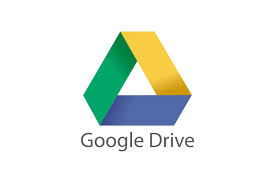
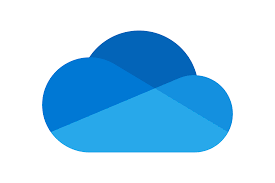
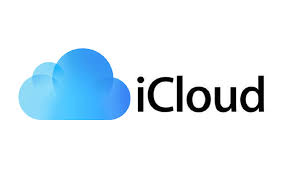
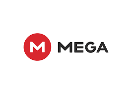
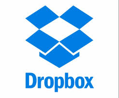
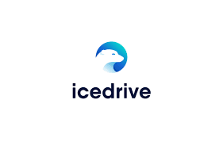
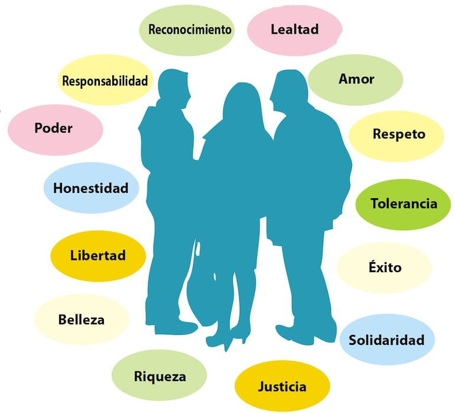

Parcial 1: Fundamentos de la Computación en la Nube
¿Qué es la computación en la nube?
La computación en la nube es un modelo que permite el acceso bajo demanda a recursos compartidos de computación (redes, servidores, almacenamiento, aplicaciones y servicios) a través de Internet. Este paradigma tecnológico ha revolucionado la forma en que las empresas y usuarios acceden a los recursos informáticos, eliminando la necesidad de mantener infraestructura física local.
Modelos de servicio en la nube
La computación en la nube ofrece tres modelos principales de servicio, cada uno con diferentes niveles de control, flexibilidad y gestión:
- Infraestructura como Servicio (IaaS): Proporciona recursos informáticos fundamentales como máquinas virtuales, almacenamiento y redes. Ejemplos: AWS EC2, Google Compute Engine.
- Plataforma como Servicio (PaaS): Ofrece entornos para desarrollar, probar y administrar aplicaciones sin preocuparse por la infraestructura subyacente. Ejemplos: Google App Engine, Microsoft Azure.
- Software como Servicio (SaaS): Aplicaciones completas alojadas en la nube y accesibles a través de un navegador web. Ejemplos: Google Workspace, Microsoft 365.

Dato importante
El almacenamiento en la nube ha crecido de manera significativa y se espera que sea una de las soluciones más utilizadas en los próximos años. Según un informe de Forbes, se estima que para 2025 el 80% de las empresas usarán servicios en la nube para gestionar sus datos, lo que refleja un cambio hacia una infraestructura más flexible y escalable. Mas información aqui
Ventajas de la computación en la nube
La adopción de la computación en la nube ofrece numerosas ventajas para organizaciones y usuarios individuales:
- Reducción de costos: Elimina gastos de capital en hardware y software
- Escalabilidad: Capacidad de ajustar recursos según demanda
- Acceso global: Disponibilidad desde cualquier lugar con internet
- Automatización de actualizaciones: Mantenimiento gestionado por el proveedor
- Continuidad del negocio: Copias de seguridad y recuperación ante desastres
A continuacion se presentan 9 de las herramientas mas populares y mas utlizadas para almacenamiento en la nube
Google Drive: es posiblemente el servicio de almacenamiento en la nube gratuito más popular. Ofrece 15 GB de espacio, compartido con otros servicios de Google como Gmail y Google Fotos. Accesible desde cualquier navegador.
Microsoft OneDrive: el principal competidor de Google, también ofrece almacenamiento en la nube gratuito a través de OneDrive. Con 5 GB de espacio independiente, OneDrive suele venir preinstalado en Windows y cuenta con aplicaciones móviles para acceder a tus archivos desde cualquier lugar.
iCloud el servicio de Apple, ofrece 5 GB gratuitos para usuarios de dispositivos Apple, ideal para guardar fotos, vídeos y documentos. Su sincronización entre dispositivos Apple es excelente. Las opciones de pago van desde 50 GB por 0,99 € al mes hasta 2 TB por 9,99 € al mes.
Mega destaca por ofrecer 20 GB de almacenamiento gratuito, el mayor espacio de esta lista. Con aplicaciones para todos los sistemas operativos, incluyendo Linux, Si necesitas más espacio, puedes contratar desde 2 TB por 9,99 € al mes hasta 16 TB por 29,99 € al mes.
Dropbox uno de los pioneros en almacenamiento en la nube gratuito, ofrece 2 GB de espacio. Aunque puede parecer poco, es útil para documentos y archivos pequeños. Dropbox ofrece planes de pago desde 2 TB por 11,99 € al mes hasta 5 TB por 14,50 € al mes.
Media Fire: ofrece 10 GB de almacenamiento gratuito con solo crear una cuenta. Sin embargo, solo es accesible desde el navegador, aunque cuenta con aplicaciones móviles. Puedes ampliar el espacio a 1 TB por 6,99 € al mes.
IceDrive ofrece 10 GB de almacenamiento gratuito con integración total en Windows y aplicaciones para macOS, Linux y dispositivos móviles. Destaca por su baja latencia y sincronización instantánea. Las opciones de pago van desde 150 GB por mes.
 pCloud ofrece 10 GB gratuitos y destaca por su seguridad, con sede en Suiza. Cuenta con extensiones para navegadores y planes de pago desde 500 GB por 49,99 € al año hasta 2 TB por 99,99 € al año. También ofrece planes de por vida, como 500 GB por 199 € o 2 TB por 399 €.
Click aqui para mas información
Conceptos basicos de la nube
Después de haber revisado los conceptos fundamentales sobre la nube y explorado algunas herramientas para la creación de videos, pusimos en práctica los conocimientos adquiridos para crear un video acerca de los valores éticos. Utilizamos la herramienta FlexClip, una plataforma accesible y fácil de usar, ideal para proyectos colaborativos y educativos, para producir el video que explica los valores éticos de manera clara y visual. Ver video
Ademas tambien se creo un documento acerca de los valores éticos, usando la herramienta google docs, donde se abordaron los siguientes temas ¿Qué son los valores éticos y morales?, Causas y motivos por lo cual se han perdido los valores, y los valores mas conocidos, Los valores permiten una mejor convivencia social, ya que fomentan la confianza, la empatía, la solidaridad y el respeto mutuo. En la escuela, por ejemplo, ayudan a mantener un ambiente sano donde los estudiantes pueden desarrollarse de manera integral. En la sociedad, promueven la justicia, el entendimiento y la paz. Entre los valores éticos más populares se encuentran el respeto, la honestidad, la responsabilidad, la solidaridad, la empatía, la justicia, la lealtad y la tolerancia. Estos valores son universales y aplicables en todas las culturas. Se manifiestan en acciones cotidianas, como decir la verdad, cumplir con deberes, apoyar a los demás o aceptar las diferencias. Ver actividad 6
